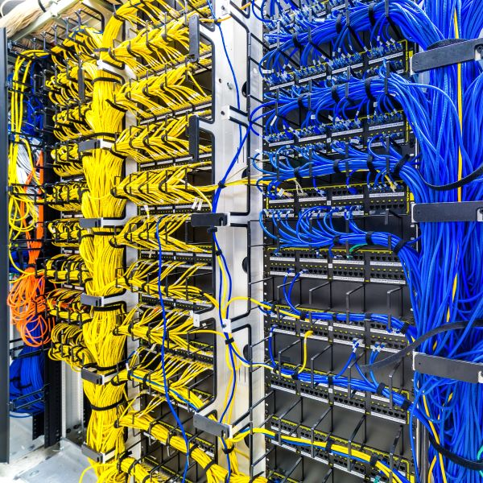

A Comparison of Different Network Media
Physical network media form the foundation of all data communication, serving as the tangible pathways through which information travels. Over the years, a variety of media types have been developed, each with unique properties suited to different environments, speeds, and applications. Understanding these media — from copper cables to fiber optics and beyond — is key to grasping how networks function and evolve.
Twisted pair cabling is one of the most common forms of physical network media, especially in local area networks (LANs). It consists of pairs of insulated copper wires twisted together to reduce electromagnetic interference. There are two main categories: unshielded twisted pair (UTP), used widely for Ethernet connections due to its cost-effectiveness and ease of installation, and shielded twisted pair (STP), which includes an additional protective layer to prevent signal degradation in electrically noisy environments. While twisted pair cables can transmit data at impressive speeds, they are best suited for shorter distances compared to other media types.
Coaxial cable, once the backbone of early computer networks and television systems, features a single copper conductor surrounded by insulation, shielding, and an outer jacket. Its robust shielding makes it more resistant to interference than twisted pair cables, allowing for longer transmission distances and higher bandwidth. Though less common in modern LANs, coaxial cables are still used in broadband internet and certain industrial applications where reliability and signal integrity are critical.
Fiber optic cable represents the pinnacle of modern physical network media. Instead of transmitting electrical signals, it uses pulses of light to carry data through strands of glass or plastic fibers. This allows for extremely high-speed, long-distance communication with minimal signal loss and immunity to electromagnetic interference. Single-mode fiber is designed for long-distance, high-capacity links, while multi-mode fiber is used for shorter distances within buildings or campuses. As demand for faster, more reliable connections grows, fiber optics have become the preferred choice for backbone infrastructure and next-generation networks.
In addition to these wired options, the rise of wireless transmission — while not a physical medium in the traditional sense — complements physical infrastructure by enabling mobility and flexibility. Together, these diverse media form the intricate web of connectivity that underpins everything from small home networks to vast global data systems. Each type plays a vital role in shaping the speed, reach, and reliability of the modern digital world.